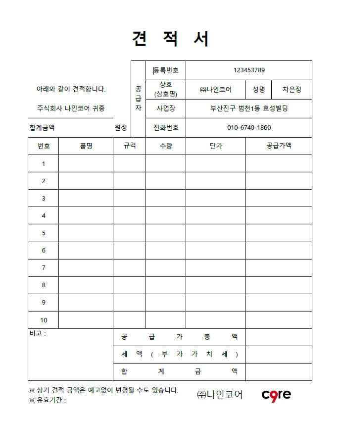
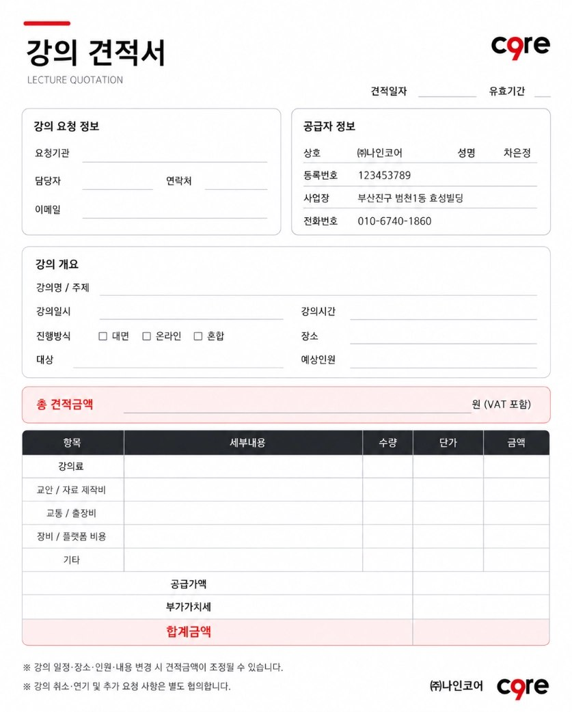
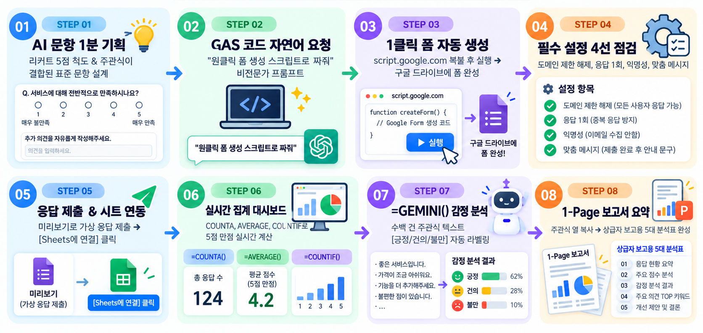

MICE & 비즈니스 실무
AI 워크플로우 마스터 코스
생성형 AI 생태계 이해와 프롬프트 공식 4+2 기반의 RFP 제안서·해외 VIP 초청·현장 위기대응부터,
회사소개 PPT 및 행사 견적서 AI 에이전트 스킬 구축, 구글 폼·=GEMINI() 실시간 집계까지
PCO·PEO 현업 전 주기를 6시간 만에 완주하는 실전 중심 직무 교육 과정입니다.
MICE 산업 특성을 반영한 실무 중심 AI 리터러시 & 자동화 설계
MICE 현장은 입찰(RFP)·해외 연사 의전·스폰서 유치·현장 큐시트·사후 정산 및 결과보고까지 짧은 납기 내 고품질 문서와 다국어 커뮤니케이션을 동시에 요구합니다. 본 과정은 단순 챗봇 질의를 넘어 현업 표준 산출물을 자동 생산하는 워크플로우를 구축합니다.
| 핵심 목표 | 세부 달성 역량 |
|---|---|
| ① 도구 적재적소 | ChatGPT·Gemini·Claude 모델별 강점을 MICE 과업에 맞게 교차 선택 |
| ② 프롬프트 표준화 | 4+2 공식(역·배·지·형+조·샘)으로 제안서·영문서한·큐시트 품질 상향 |
| ③ 에이전트 자산화 | 사내 홍보 PPT·카톡 견적서 PDF를 원클릭 생성하는 Custom Skill 구축 |
| ④ 데이터 자동 집계 | Google Apps Script 설문 자동 생성 및 =GEMINI() 함수 실시간 분석 |
6시간 워크숍 세부 커리큘럼 편성표
| 교시 / 시간 | 모듈 구분 | 세부 교육 및 실습 내용 | 이론 / 실습 | 주요 산출물 / 점검 포인트 |
|---|---|---|---|---|
| 오프닝 (15분) | 과정 오리엔테이션 | • MICE 산업 AI 도입 트렌드 및 과정 로드맵 공유 • 실습 포털 접속, 계정·브라우저 환경 점검 |
이론 15분 | 실습 환경 세팅 완료 |
| 1교시 (55분) | MODULE 01 AI 생태계 & 5대 역량 |
• 한국 AI 생태계 지형도 및 빅3 LLM(ChatGPT·Gemini·Claude) 비교 • AI 리터러시 5대 핵심 역량(이해·활용·상호작용·윤리·문제해결) • [실습 01] 3대 LLM 동일 MICE 기획 프롬프트 교차 비교 |
이론 35분 실습 20분 (휴식 10분) |
업무별 최적 LLM 선택 기준표 및 환각 검증 기준 이해 |
| 2~3교시 (110분) | MODULE 02 프롬프트 4+2 & 실전 템플릿 |
• 토큰 개념 & 프롬프트 공식 4+2(역·배·지·형 + 조·샘) 구조 학습 • MICE 실전 템플릿 5선(RFP 입찰·VIP 서한·스폰서·큐시트·결과보고) • 5컷 카드뉴스 템플릿 제작(Step 1~4) & LLM 안전 활용 5대 수칙 • [실습 02·03] 자사 행사 4+2 프롬프트 & 카드뉴스 마스터 작성 |
이론 40분 실습 70분 (휴식 10분) |
실전 MICE 문서 초안 1종 + 카드뉴스 마스터 템플릿 + 자가 체크리스트 점검 |
| 4~5교시 (100분) | MODULE 03 스마트 MICE 에이전트 스킬 |
• 커스텀 AI 에이전트 스킬 개념 및 3단계 구축 파이프라인 • [실습 04] 회사 홍보 PPT 스킬 구축(Monochrome Minimal & 워크시트) • [실습 05] 카톡 문의 기반 MICE 행사 대행 견적서 스킬 구축(양식·단가·환불) |
이론 25분 실습 75분 (휴식 10분) |
회사 홍보 PPT 10장 초안 + MICE 행사 견적 PDF 산출 스킬 (.zip 패키징) |
| 6교시 (60분) | MODULE 04 구글 폼 & =GEMINI() 집계 |
• 구글 폼 & 시트 자동화 8단계 로드맵 및 GAS 원클릭 설문 생성 • 외부 참가자·해외 바이어 배포 전 필수 설정 4선 점검 • [실습 06] [집계 대시보드] 수식 + =GEMINI() 5선 + 1-Page 요약 |
이론 20분 실습 40분 |
자동 생성 구글 폼 URL + =GEMINI() 연동 집계 시트 + 1-Page 요약 보고서 |
| 총정리 (10분) | 클로징 & 실천 계획 | • 6시간 핵심 워크플로우 총복습 및 자사 업무 적용 Action Plan 수립 • 과정 만족도 설문 및 향후 AI 리터러시 학습 가이드 안내 |
정리 10분 | 개인별 현업 적용 체크리스트 |
생성형 AI 생태계 맥락 &
MICE 실무 5대 핵심 역량
글로벌 빅3 LLM(ChatGPT · Gemini · Claude)의 기능적 차이를 정확히 파악해 MICE 과업별로 적재적소에 배분하고, AI가 만든 결과를 검증·통제하는 5대 실무 리터러시 역량을 정립합니다.
한국 AI 생태계 지형도 한눈에 보기

- 기반 모델(Foundation Model): OpenAI, Google, Anthropic 등 범용 추론·작문·멀티모달 엔진
- 업무 플랫폼 연동(Workspace): Google Workspace(시트·폼·드라이브), MS Copilot 등 사내 데이터 통합 계층
- 특화 에이전트·버티컬 앱: 디자인(PPT/카드뉴스), 번역·자막, 행사 등록/매칭 자동화 도구
하나의 AI 서비스만 고집하기보다, 문서 작문·문맥 유지와 시트/폼 데이터 연동, 시각 아이데이션을 생태계 도구별로 조합할 때 실무 속도와 정확도가 극대화됩니다.
글로벌 빅3 LLM 비교 인포그래픽

글로벌 빅3 LLM(OpenAI · Google · Anthropic) MICE 비즈니스 비교 분석
생성형 AI 모델마다 특화된 장점과 한계가 명확합니다. PCO/PEO 실무에서는 단일 모델에 의존하기보다 업무 특성에 맞춰 적절한 모델을 교차 활용하는 것이 생산성 극대화의 핵심입니다.
| 구분 (LLM) | 비즈니스 핵심 강점 및 특화 영역 | MICE 실무 추천 업무 |
|---|---|---|
| ChatGPT (OpenAI) |
• 광범위한 데이터 분석(Advanced Data Analysis) • 비주얼 이미지 생성 결합, 음성 모드 및 플러그인/GPTs 생태계 • 다양한 각도의 빠른 브레인스토밍과 트렌드 결합 아이데이션 |
행사 기획 초기 아이데이션, 공간 연출 콘셉트 도출, SNS 카드뉴스 기획 및 이미지 생성 |
| Gemini (Google) |
• Google Workspace(시트·폼·문서·드라이브) 네이티브 완벽 연동 • 최신 웹 검색 결합 및 100만 토큰 이상의 대규모 문맥/영상 처리 • 스프레드시트 셀 수식( =GEMINI()) 및 Apps Script 작성 강점 |
구글 폼 자동 생성(GAS), 스프레드시트 =GEMINI() 대량 집계, 해외 산업 동향·유사 행사 리서치 |
| Claude (Anthropic) |
• 한국어·영문 모두 자연스럽고 정교한 논리적 작문력 • 20만 토큰의 안정적인 긴 문서 맥락 이해 및 지시 준수율 • 비즈니스·외교적 톤앤매너 구현 및 Skills/Artifact 작업 최적화 |
RFP 입찰 제안서 본문 집필, 해외 VIP 공식 영문 초청 서한, 지자체 결과보고서 및 에이전트 스킬 |
AI 리터러시(AI Literacy)의 정의와 디지털 리터러시와의 차이
| 비교 항목 | 기존 디지털 실무 | AI 워크플로우 실무 |
|---|---|---|
| 문서 작성 방식 | 빈 화면에서 백지부터 직접 타이핑 | 맥락·조건을 입력해 1차 초안을 받고 검증·윤문 |
| 결과물 품질 변수 | 개인의 오피스 숙련도 | 프롬프트 설계력 + 사내 데이터 구조화 역량 |
| 핵심 리스크 | 파일 유실, 오탈자 | 환각(Hallucination), 기밀/개인정보 유출, 저작권 |
- Long & Magerko (2020): What Is AI Literacy? (ACM CHI — AI 원리 이해·비판적 평가·협업 역량 정립)
- European Union AI Act (2024): Regulation (EU) 2024/1689 Article 4 — 조직 내 AI 시스템 운영·활용 인력에 대한 AI 리터러시 보장 의무
- OECD · UNESCO 가이드라인: 재직자 및 공공·산업 현장 인력의 책임 있는 AI 활용 표준 모델
실무자 AI 리터러시 5대 핵심 역량 요소 (Core Competencies)
| 핵심 영역 | 세부 역량 | MICE 현업 적용 예시 |
|---|---|---|
| ① AI 개념 이해 | AI·LLM 기본 원리, 확률적 생성 구조, 모델과 서비스 구분, 한계 이해 | 컨벤션센터 면적·단가처럼 최신 사실이 필요한 수치를 LLM이 지어낼 수 있음을 인지 |
| ② AI 도구 활용 | 목적별 AI 서비스 선택, 멀티모달(이미지/PDF) 활용, 워크스페이스 연동 | ChatGPT로 행사 콘셉트 기획, Gemini로 설문/시트 집계, Claude로 RFP·VIP 서한 작성 |
| ③ 상호작용 및 생성 | 4+2 프레임워크 기반 프롬프트 설계, 2차 피드백 지시, 산출물 편집 | 역할·배경·형식을 지정해 개막식 분 단위 큐시트와 카드뉴스 기획표 도출 |
| ④ 윤리·안전·평가 | 출처·제원 교차 검증, 바이어 개인정보 비식별화, 상표권·저작권 점검 | 참가자 여권번호·미공개 견적 단가 입력 차단 및 KIPRIS 슬로건 상표 조회 |
| ⑤ 문제해결·자동화 | 병목 업무 정의, 반복 프로세스의 에이전트 스킬 및 시트 수식화 | 카톡 문의 접수 → 견적 PDF 자동 생성 스킬 및 설문 응답 실시간 감정 분류 구축 |
[실습 01] 빅3 LLM 동일 MICE 과업 교차 실행 및 품질 비교
동일한 MICE 실무 프롬프트를 ChatGPT · Gemini · Claude 중 2개 이상 모델에 동시에 입력하여, 문체·구조화 수준·현장 반영도를 직접 비교합니다.
| 평가 기준 | 비교 체크 포인트 |
|---|---|
| 1. 콘셉트 참신성 | 부산·해양 산업 특성이 뻔한 미사여구 없이 반영되었는가? |
| 2. 영문 외교적 격식 | 해외 VIP가 읽었을 때 정중하고 과장되지 않은 비즈니스 서신인가? |
| 3. 구조·가독성 | 제안서·보고서에 바로 옮길 수 있게 항목과 목차가 정돈되었는가? |
| 4. 환각/오류 여부 | 존재하지 않는 벡스코 홀 명칭이나 허위 수치를 지어내지 않았는가? |
프롬프트 공식 4+2 & MICE 실전 템플릿
모호한 일반 질문에서 벗어나 「역·배·지·형 + 조·샘」 4+2 공식을 통해 RFP 입찰, 해외 연사 초청, 스폰서십, 현장 큐시트, 결과보고서 및 5컷 카드뉴스 마스터 템플릿까지 표준화합니다.
토큰(Token)의 이해와 「스마트 MICE 프롬프트 공식 4+2」 구조
거대언어모델(LLM)은 사람이 쓰는 글자를 통째로 읽지 않고 통계적으로 자주 결합하는 조각(Token) 단위로 분해하여 다음 토큰의 확률을 예측합니다.
1) 한글 vs 영문 토큰 효율: 같은 의미라도 한국어는 영문 대비 토큰 소모량이 많아 복잡한 문맥·의전 서신은 구조화된 마크다운 구분(
[역할], [배경])이 유리합니다.2) 컨텍스트 희석(Lost in the Middle): 핵심 제약 조건을 길고 장황한 줄글 중간에 숨기면 누락될 확률이 높아집니다.
3) 실습 도구: huggingface.co/spaces/Xenova/the-tokenizer-playground에서 한글·영문 행사 안내문의 토큰 분할 확인
생성형 AI로부터 PCO 제안서 수주와 현장 운영에 즉시 투입 가능한 고품질 산출물을 얻기 위한 표준 공식입니다. 핵심 뼈대 4개와 환각을 원천 차단하는 보강재 2개를 결합합니다.
2. 배경 (Context): 행사 규모, 개최 장소, 주요 바이어, RFP 목표
3. 지시 (Task): 구체적으로 작성할 기획서·큐시트·제안서 항목
4. 형식 (Format): PT 개조식(1.-가.-1)), 표(Table), 큐시트 규격
6. 샘플 (Example): 기대하는 톤앤매너·목차 예시(Diplomatic Letter, 공문서 서식, 열 구성)
「스마트 MICE 프롬프트 공식 4+2」 요소별 정의 및 실무 예시 문구
| 구분 | 요소 (영문) | MICE 실무 정의 및 역할 | 작성 팁 & 실무 적용 예시 문구 |
|---|---|---|---|
| 핵심 4대 요소 (뼈대) |
1. 역할 (Role) | AI에게 부여할 전문 PCO/PEO 디렉터 직무 페르소나 및 평가위원 관점 | "너는 15년 차 대형 국제회의 전문 PCO 총괄 기획 디렉터이자 입찰 평가위원 출신이야." |
| 2. 배경 (Context) | 행사 규모, 개최 기간·장소(베뉴), 주요 바이어, 발주처 RFP 핵심 목표 | "30개국 2,500명(해외 바이어 600명) 규모 부산 벡스코 유치 용역 입찰에 참여 중이야." | |
| 3. 지시 (Task) | 구체적으로 도출·작성해야 할 기획서, 큐시트, 제안서 세부 항목 목록 | "메인 슬로건(국/영문), 3대 추진 전략, 오프닝 무대 공간 연출안을 도출해 줘." | |
| 4. 형식 (Format) | PT 제안서 개조식(1. - 가. - 1)), Markdown 비교 표(Table), 큐시트 규격 |
"심사위원 PT 제안서 삽입용 개조식 목차 체계 및 핵심 키워드 볼드체 강조로 출력해 줘." | |
| 추가 2대 요소 (보강재) |
5. 조건 (Constraint) | 지역 인프라 연계, 환각 금지(출처 불명 수치 금지), ESG 친환경 실천 수칙 준수 | "뜬구름 잡는 일반론을 배제하고 부산 해양 인프라의 산업적 특성이 녹아들게 작성해 줘." |
| 6. 샘플 (Example) | 기대하는 톤앤매너·서식 예시 (Diplomatic Letter, 공문서 목차, 표 컬럼 지정) | "'I. 개최 개요 → II. 주요 추진 성과 → III. 세부 평가 → IV. 향후 제언' 목차 체계 준수" |
"많은 사람" 대신 "30개국 2,500명·부스 150개"처럼 정량 수치를 주면 공간·예산 산정이 정교해집니다.
"단순 현수막 혜택 위주 제외", "없는 정보 지어내기 금지"처럼 배제 규칙을 꼭 넣으세요.
문서 내 바뀌는 행사명·일정·규모만
[대괄호]로 묶어 팀 사내 라이브러리로 관리합니다.
단순 지시형 vs 4+2 공식 결합형: 2027 탄소중립 신재생에너지 엑스포 기획안
- 인터넷 어디에나 있는 일반론(환영사, 축사, 전시 부스 운영, 기념품 증정)만 나열
- 참가 바이어 규모·전시장 특성·매칭 목표가 빠져 PEO/PCO 제안서나 보고서에 즉시 활용 불가
- 결국 실무자가 처음부터 다시 문서를 작성하거나 여러 차례 추가 질문을 반복해야 함
[역할] 글로벌 전시 주최사(PEO) 수석 전시기획자
[배경] B2B 바이어 5,000명과 300개 부스가 참여하는 코엑스 3일간의 '2027 탄소중립 신재생에너지 엑스포'
[지시] 바이어-참가기업 1:1 비즈니스 매칭 상담회 운영안, 부대 세미나 3개 테마, 참관객 체류시간을 늘릴 인터랙티브 체험존 아이디어 제시
[형식] 제안서 피칭용 목차 형태와 부스 동선/세미나 일정 표(Table)로 출력
[조건] 해외 바이어 유치 인센티브 방안 포함, 부스 시공 시 폐기물 최소화(Zero Waste) 방안 필수 기재
[샘플] [프로그램명] | [대상] | [운영 방식] | [기대 바이어 상담 건수] 표 서식 준수
① [RFP 입찰 제안서] 국제회의·전시 유치 제안서 차별화 콘셉트 & 추진 전략
지자체, 공공기관, 학회가 발주한 MICE 용역 입찰(RFP)에서 심사위원의 눈길을 사로잡을 핵심 슬로건, 차별화 콘셉트, 공간 연출 및 ESG 전략을 기획할 때 활용합니다.
[역할] 너는 15년 차 대형 국제회의 전문 PCO(국제회의기획사) 총괄 기획 디렉터이자 정부/공공 입찰 제안서 평가위원 출신이야. [배경] 우리 회사는 이번에 [지자체/협회명]에서 발주한 '2027 아시아-태평양 친환경 해양 모빌리티 서밋' 유치 용역 입찰(RFP)에 참여하려고 해. - 개최 기간 및 장소: 2027년 10월 중 3일간, 부산 벡스코 - 예상 규모: 30개국 2,500명(해외 바이어 600명 포함), 전시 부스 150개 - 발주처의 핵심 요구사항: 첨단 친환경 기술 시연, 지역 MICE 경제 활성화, 탄소중립 ESG 실천 [지시] 경쟁사 제안서와 압도적인 차별성을 가질 수 있도록 아래 항목을 도출해 줘: 1. 본 행사의 핵심 비전과 심사위원의 뇌리에 각인될 매력적인 메인 슬로건 (국문/영문 각 2종) 2. 타 행사와 차별화되는 3대 핵심 추진 전략(Key Strategy) 3. 전시장 로비 및 오프닝 세레모니의 혁신적인 공간 연출 및 테크놀로지(디지털 트윈, 인터랙티브 미디어 등) 결합 아이디어 2가지 4. 지속 가능한 MICE를 실천하기 위한 실질적인 친환경(ESG) 운영 방안 [형식] 심사위원 PT 제안서에 바로 삽입할 수 있도록 개조식(1. - 가. - 1)) 목차 체계로 정리하고, 핵심 키워드는 **볼드체**로 강조해 줘. [조건] 뜬구름 잡는 일반론을 피하고, 개최지인 [도시/베뉴명: 부산 벡스코]의 지역 인프라와 산업적 특성이 자연스럽게 녹아들게 작성해 줘.
② [글로벌 연사 섭외] 해외 VIP·기조연설자(Keynote Speaker) 공식 초청 서한
인지도가 높은 글로벌 석학, 해외 유력 기업 CEO, 국제기구 인사를 기조연설자로 초청할 때 격식 있고 거절하기 힘든 영문 공식 서신 작성 시 사용합니다.
[역할] You are a Senior International Relations Coordinator for a prestigious global conference with 15 years of experience in VIP protocol and speaker curation. [배경] We are hosting [행사 공식 영문명, e.g., The Global AI & Future Healthcare Congress 2027]. - Date & Location: [일정 및 장소, e.g., November 12-14, 2027 | Seoul, South Korea] - Target Audience: [청중 특성, e.g., 1,500+ global medical leaders, hospital CEOs, and AI researchers] - We want to invite [연사 성함 및 직함, e.g., Dr. Andrew Ng, Founder of DeepLearning.AI] as our prestigious Opening Keynote Speaker. [지시] Draft an extremely professional, courteous, and compelling official Invitation Letter in English. Include: 1. Formal invitation to deliver a 30-minute keynote speech followed by a 15-minute Q&A. 2. Clear explanation of why this specific speaker is the undisputed ideal person for this year's theme: [행사 메인 테마, e.g., "Democratizing AI in Clinical Medicine"]. 3. Comprehensive hospitality package provided (First/Business class airfare, 5-star hotel accommodation, VIP concierge, speaker honorarium, and post-tour). 4. Flexible options (in-person attendance preferred, but live hybrid participation open if scheduling is tight). 5. Response deadline and point of contact info. [형식] Standard Diplomatic/Executive Business Letter format (Date, Salutation, Body Paragraphs, Call to Action, Complimentary Close, Signature block). [조건] Tone must be highly respectful, prestigious, and persuasive. Avoid pushy sales language; frame the speech as a defining global moment that inspires industry leaders worldwide.
③ [스폰서십 & 세일즈] 기업 후원사 유치를 위한 등급별(Tier) 스폰서십 제안서
대기업, 공공기관, 테크 기업으로부터 행사 협찬금을 유치할 때 후원사가 투자 대비 마케팅 효과(ROI)를 체감하도록 등급별 특전을 설계할 때 활용합니다.
[역할] 너는 글로벌 메가 컨벤션 및 B2B 산업 엑스포의 스폰서십 세일즈 전문 디렉터야. [배경] 우리는 [행사명, 예: 2027 글로벌 스마트 모빌리티 엑스포]의 성공적인 개최와 재정 확충을 위해 국내외 주요 모빌리티·배터리·SW 기업들을 대상으로 스폰서십 유치 작업을 진행하고 있어. - 총 모금 목표액: [예: 10억 원] - 행사 특징: [예: 전 세계 완성차 제조사 C-Level 바이어 400명, 공공 발주처 구매 결정권자 대거 참석] [지시] 기업들이 '단순 기부'가 아니라 '투자 대비 마케팅 효과(ROI)'가 확실하다고 느낄 수 있는 매력적인 스폰서십 패키지 제안안을 설계해 줘: 1. 스폰서 등급 분류: 다이아몬드(단독 메인), 플래티넘, 골드, 실버, 스타트업 스폰서로 구분 2. 등급별 권장 후원 금액 및 모집 슬롯 수(한정 구좌) 설정 3. 등급별 차등 제공 혜택: - 온·오프라인 브랜딩 (홈페이지, 현장 대형 현수막, 바이어 네임택, 가방 로고 노출 등) - 세션 발표 기회 (스폰서 세션, 키노트 패널 참여) - VIP 네트워킹 라운지 독점 이용권 및 갈라 디너(Gala Dinner) VIP 테이블 지정 - 1:1 바이어 사전 비즈니스 매칭 데이터 우선 제공 4. 기업 후원 담당자가 예산 승인을 올리기 쉽도록 유도하는 '스폰서십 참여 3대 기대효과(ROI)' 요약 [형식] 각 등급별 혜택을 한눈에 비교할 수 있는 깔끔한 Markdown 비교 표(Table)와 세부 설명 개조식으로 구성해 줘. [조건] 현수막 노출 같은 낡은 혜택에만 치중하지 말고, B2B 기업이 가장 탐내는 '실질적인 바이어 리드(Lead) 확보'와 '언론 PR 노출' 혜택을 강조해 줘.
④ [현장 운영 & 위기관리] 개막식 분 단위 큐시트 & 돌발 비상대응 매뉴얼
VIP 참석 개막식·갈라디너에서 조명·음향·영상·사회자·의전 동선을 1분 단위로 맞추고 돌발 사고 대비 매뉴얼(Contingency Plan)을 수립할 때 사용합니다.
[역할] 너는 수백 회의 정상급 국제회의와 정부 기념식을 총괄한 무대감독이자 MICE 현장 운영 총괄 PM이야. [배경] [행사명, 예: 2027 세계 도시혁신 포럼]의 공식 개막식(Opening Ceremony) 현장 총괄 큐시트를 작성 중이야. - 일시 및 장소: [예: 2027년 9월 15일(수) 10:00~11:30 (총 90분), 컨벤션홀 1층] - 주요 참석자: [예: 장관급 인사 2명, 해외 시장(Mayor) 10명, 초청 참가자 1,200명] - 주요 식순: 식전 공연 → 개회 선언 → 국민의례 → 환영사/축사 → 개막 퍼포먼스 → 기조연설 → 기념촬영 [지시] 아래 두 가지 산출물을 구체적으로 작성해 줘: 1. **분 단위 공식 개막식 큐시트 (Run-through Sheet)** - [시간] / [식순] / [주요 내용 및 사회자 멘트 요지] / [무대/영상(LED)/조명/음향 큐(Cue)] / [의전 및 스태프 행동 요령] 2. **현장 돌발 위기대응 시나리오(Contingency Plan) 3선** - 상황 ①: 개막식 도중 메인 무대 LED 영상 송출 중단 및 마이크 음향 하울링/두절 발생 시 - 상황 ②: 예정된 주요 VIP 연사가 교통 체증으로 20분 지연 도착할 때의 식순 재배치 방안 - 상황 ③: 밀집 인파로 인한 객석 응급환자(호흡곤란/실신) 발생 시 구급 동선 및 비상 대처 [형식] 큐시트는 실제 현장 바인더에 출력해 넣을 수 있는 정밀한 표(Table)로 작성하고, 위기대응은 단계별 프로토콜(발생 → 보고 → 조치 → 사후처리)로 작성해 줘. [조건] 1분 단위의 현실적인 소요 시간을 산정하고, 장비 담당 스태프와 의전팀 간의 무전 사인(Signal)까지 구체적으로 적시해 줘.
⑤ [사후 성과보고] 참가자·바이어 데이터 기반 종합 결과보고서 작성
행사 종료 후 지자체·중앙부처·협회에 제출할 정량·정성 성과 분석 및 차기 행사 개선 방향을 담은 최종 결과보고서를 작성할 때 활용합니다.
[역할] 너는 컨벤션 뷰로(CVB) 평가위원 및 대형 MICE 행사 사후 성과평가 분석 전문 연구원이야. [배경] 최근 성공적으로 종료된 [행사명, 예: 2026 K-바이오 글로벌 파트너링 페어]의 공식 종합 결과보고서(Final Report)를 작성 중이야. - 개최 결과 요약: * 총 참가자 수: [예: 목표 3,000명 대비 3,420명 달성 (해외 28개국 520명)] * 1:1 비즈니스 수출 상담: [예: 총 840건 진행, 현장 MOU 체결 12건, 상담액 약 4,500만 달러] * 만족도 조사 결과(5점 만점): 전체 프로그램 만족도 [4.42점], 베뉴/시설 만족도 [4.61점], 다만 '점심 식음료(F&B) 부족'과 '동시통역 수신기 수량 부족'에 대한 불만 피드백이 일부 접수됨. [지시] 지자체장 및 주최 협회 이사회에 공식 보고할 품격 있는 '결과보고서 핵심 요약(Executive Summary)'을 작성해 줘: 1. 행사 개최 종합 개요 및 주요 핵심 성과(Key Achievements) 3대 하이라이트 요약 2. 정량적 성과 분석 (참가자 수, 글로벌 비중, 비즈니스 수출 성과 및 지역 경제 파급효과 추정치 설명) 3. 정성적 만족도 분석 및 긍정적 평가 요인 도출 4. 참가자 불만 사항(F&B, 통역 인프라)에 대한 솔직한 진단과 차기 행사 개선 로드맵(Action Plan) 제시 [형식] 지자체/정부 제출용 공문서 및 보고서 규격(I. 개최 개요 → II. 주요 추진 성과 → III. 세부 평가 및 설문 분석 → IV. 향후 제언) 목차 체계 준수. [조건] 실패나 불만족 요소는 숨기지 않고 전문적인 개선 대책으로 승화시켜 차기 행사 예산 증액의 근거로 활용할 수 있도록 설득력 있게 서술해 줘.
[실습 02] 5대 템플릿 중 1종 선택 → 내 담당 행사 데이터 치환 및 고도화
| 단계 | 수행 과업 |
|---|---|
| Step 1 | 5대 실전 템플릿(RFP 입찰·글로벌 연사·스폰서십·현장 큐시트·결과보고서) 중 본인 직무와 가장 밀접한 1종을 선택합니다. |
| Step 2 | 음영으로 표시된 [대괄호] 변수(행사명, 일정, 베뉴, 규모, 핵심 목표 등)를 현재 담당하거나 예정된 행사 정보로 치환합니다. *(기밀/실명은 가명 처리)* |
| Step 3 | 주력 LLM에서 실행한 뒤, 출력물에서 추상적인 표현이나 현실과 다른 베뉴 조건을 찾아 후속 프롬프트로 1회 이상 수정 지시합니다. |
| Step 4 | 최종 결과물에서 [조건]과 [샘플] 항목을 우리 팀만의 고정 규칙으로 정리해 개인 메모장에 저장합니다. |
[기업 A], [000원]으로 대체합니다.
| 진단 증상 | 추가 입력할 보완 프롬프트 예시 |
|---|---|
| 내용이 너무 일반적일 때 | "방금 안은 어느 전시회나 다 넣을 수 있는 내용이야. [베뉴 특성/바이어 업종]을 반영해 2가지만 구체적 프로그램으로 다시 써줘." |
| 표 컬럼이 엉킬 때 | "모두 하나의 Markdown 표로 합치고 열 순서를 [시간|식순|담당|무전큐]로 고정해 줘." |
| 말투가 가볍거나 어색할 때 | "공공기관 보고용으로 '함/음' 개조식으로 통일하고 과장된 형용사는 모두 삭제해 줘." |
MICE 실무 프롬프트 템플릿 제작 흐름 (STEP 1 → STEP 2 → STEP 3)
다음 MICE 행사(컨퍼런스·박람회·세미나) 안내문을 분석하여 인스타그램·카카오톡 배포용 5컷 카드뉴스 기획안을 작성해줘.
[행사 안내문 / 프로그램 요강 붙여넣기]
[작성 규칙]
1. 1컷(표지): 업계 실무자의 눈길을 사로잡는 직관적이고 매력적인 헤드카피 (15자 이내)
2. 2~4컷(본문): 참가자(또는 바이어)가 얻을 수 있는 핵심 실무 혜택 3가지를 컷당 1개씩 요약
3. 5컷(참가 안내): 행사 일시, 장소(베뉴/홀), 사전 등록 기한, 신청 링크 안내 문구
4. 각 컷마다 배경으로 쓸 수 있는 AI 이미지 프롬프트(영문)를 1줄씩 제안해줘.
위의 1컷~ 5컷 까지의 카드뉴스를 생성할 수 있는 영문 프롬프트를 각각 생성해줘.
1차에서 카피·구조 합의를 마친 뒤 2차에서 영문 이미지 프롬프트를 분리 생성하면 시각 톤 일관성과 텍스트 여백(Safe Zone)이 정교해집니다.
위의 프롬프트를 통해 카드뉴스 제작을 위한 프롬프트 템플릿을 만들어줘.
{{행사 안내문}}만 남긴 단일 마스터 템플릿으로 만들어 줍니다.
4. [마스터 템플릿] 5컷 MICE 카드뉴스 통합 생성 프롬프트
| 설계 영역 | 규격 및 통제 목적 |
|---|---|
| 포맷·비율 고정 | 5컷, 4:5 (1080×1350px) — 인스타그램·카카오톡 모바일 가독성 최적화 |
| 브랜드 톤 고정 | 스타일: 프리미엄 비즈니스 × 모던 MICE 컬러: 네이비·블루·화이트·옐로우 |
| 컷별 역할 배분 | 1컷(15자 이내 헤드카피+행사명) / 2~4컷(실무 혜택 각 1개) / 5컷(일시·장소·마감·링크·CTA) |
| 이미지 여백 규칙 | 텍스트 없는 이미지, 4:5 비율, 한글 카피 얹을 여백 확보 명시 |
| 환각 차단 장치 | "안내문에 없는 사실은 만들어내지 말고 '정보 확인 필요'로 표시해 줘." |
너는 MICE 전문 마케팅 기획자이자 카드뉴스 디자이너야. 다음 행사 안내문을 분석해 인스타그램·카카오톡용 5컷 카드뉴스를 기획해 줘.
[행사 안내문]
{{행사 안내문 전체 입력}}
[제작 조건]
- 5컷, 4:5(1080×1350px)
- 스타일: 프리미엄 비즈니스 × 모던 MICE
- 컬러: 네이비·블루·화이트·옐로우
- 1컷: 15자 이내 헤드카피와 행사명
- 2~4컷: 참가자가 얻는 실무 혜택을 컷당 1개씩
- 5컷: 행사 일시·장소·등록 마감·신청 링크·CTA
[출력]
1. 행사 정보 요약표
2. 컷별 메인·서브카피와 시각 요소 기획표
3. 컷별 독립형 영문 AI 배경 이미지 프롬프트(텍스트 없는 이미지, 4:5, 카피 여백 확보)
4. 공통 디자인 가이드
5. 사실 검수 및 누락 정보
안내문에 없는 사실은 만들어내지 말고 '정보 확인 필요'로 표시해 줘.
[실습 03] 5컷 카드뉴스 마스터 템플릿 적용 및 사실 누락 검증
| 단계 | 실습 내용 |
|---|---|
| 1단계 | 소속 기관 또는 실제 진행 예정인 MICE 행사 공고문(텍스트 10~20줄 분량)을 준비합니다. *(일부러 신청 링크나 마감일을 빠뜨려 테스트해 볼 수도 있음)* |
| 2단계 | Slide 22의 [마스터 템플릿]에서 {{행사 안내문 전체 입력}} 자리에 공고문을 붙여넣고 실행합니다. |
| 3단계 | 출력된 '5. 사실 검수 및 누락 정보' 항목에 AI가 임의로 날짜·장소를 지어내지 않고 '정보 확인 필요'로 표기했는지 확인합니다. |
| 4단계 | 영문 AI 배경 이미지 프롬프트 중 1~2컷을 이미지 생성 모델(또는 미리캔버스/Canva)에 넣어 텍스트 여백 확보 여부를 점검합니다. |
| 5단계 | 우리 기관 브랜드 컬러(예: 딥그린·골드 등)에 맞게 마스터 템플릿의 [제작 조건] 컬러값을 커스터마이징해 저장합니다. |
https://chatgpt.com/share/6af25f90-2784-83ee-8da9-4cbfcaadf514
STEP 1 초기 요청부터 후속 이미지 프롬프트, STEP 3 템플릿 압축까지 실제 대화 전개 과정을 확인할 수 있습니다.
- 신규 입사자 온보딩 단축: 팀의 디자인 가이드·컬러·카피 길이(15자 이내)를 프롬프트에 박아두어 누가 돌리든 일정 톤 유지
- 할루시네이션 방어: 마감일·참가비 같은 치명적 오류를
'정보 확인 필요'플래그로 강제 노출 - 응용 확장: 뉴스레터 배너, 링크드인 포스트, 연사 소개 카드 등 동일 구조의 3~5컷 템플릿으로 손쉽게 변형 가능
MICE 실무자를 위한 LLM 안전 활용 5대 수칙
MICE 실무자 프롬프트 입력 전 자가 체크리스트 & Module 02 핵심 정리
| 점검 | 확인 질문 |
|---|---|
| ✓ 01 | 프롬프트에 참가자 개인정보(이름, 연락처, 여권)나 미공개 입찰 견적이 포함되어 있지 않은가? |
| ✓ 02 | AI가 제시한 전시장 제원(면적, 수용인원, 장비 규격)을 베뉴 공식 매뉴얼로 확인했는가? |
| ✓ 03 | 해외 참가자 대상 안내문에 문화적·종교적 결례나 오역의 소지는 없는가? |
| ✓ 04 | 도출된 슬로건과 행사명이 타 대형 행사의 상표나 표절에 해당하지 않는가? |
| ✓ 05 | AI의 답변을 그대로 복사하지 않고, 현장 상황에 맞게 윤문·보완하였는가? |
STEP 1(초안) → STEP 2(이미지) → STEP 3(템플릿 요청) → STEP 4(마스터) 전환으로 팀 표준 프롬프트 생성
스마트 MICE 행정 — AI 에이전트 스킬 제작 및 실무 활용
매번 긴 프롬프트를 복사하는 단계를 넘어, 우리 회사의 디자인 스타일·소개 워크시트·행사 대행 단가표·환불 규정을 지침 패키지로 묶어 원클릭 산출하는 2종의 실전 AI 에이전트 스킬을 제작합니다.
AI 에이전트 스킬(Custom Skill) 개념 & 3단계 구축 파이프라인
매번 긴 프롬프트를 복사해 붙여넣는 대신, 한 번만 호출 트리거 · 사내 규격 · 단가표 · 출력 형식을 등록해 두면 특정 키워드(예:
PPT, 견적)나 파일 첨부 시 자동으로 사내 표준 규격에 맞는 산출물을 생성하는 사내 맞춤형 에이전트 스킬을 구축할 수 있습니다.
참고 디자인 스타일, 회사 정보 워크시트, 기존 사내 견적서 양식 문서를 AI에 학습시켜 스킬 뼈대와 디자인·항목 기준을 세웁니다.
• 스타일 갤러리 / 레퍼런스 프롬프트
• 회사 소개 사전 정리 Google Docs
• 기존 사내 견적서 원본 양식
호출 키워드, 기본 슬라이드 수, 고정 연락처·URL, 대행 수수료·부가세·취소/환불 규정 등 세부 규칙을 대화로 다듬어 스킬을 업데이트합니다.
• 트리거 잠금 (
PPT, 슬라이드, 행사 견적 뽑아줘)• 고정 footer / 여백 / 법적 환불 고지
• 완성본 ZIP 패키징 다운로드
사전 정리된 회사 정보나 카카오톡 문의 메시지(캡처 이미지 포함)만 입력하면 홍보 PPT와 고객 회신용 견적서 PDF가 즉시 생성됩니다.
• 누락 정보 자동 체크리스트 제공
• 메신저 즉시 발송용 친절한 회신 멘트
• 팀원 간 ZIP 파일 공유로 동일 품질 유지
| 비교 항목 | 일반 복붙 프롬프트 방식 | AI 에이전트 스킬(Custom Skill) 방식 |
|---|---|---|
| 업무 재현성 | 대화창마다 여백·폰트·계산 기준이 조금씩 달라짐 | 고정 트리거·단가표·환불 규정이 내장되어 결과 일관성 확보 |
| 팀 공유·확장 | 긴 텍스트를 매뉴얼로 배포해야 함 | .zip 스킬 파일 공유만으로 신입 직원도 즉시 동일 규격 실행 |
Monochrome Editorial Minimal PPT 스킬 구축: 명령 1 ~ 명령 4
PPT 슬라이드 작성과 관련된 스킬을 작성하려고해.
다음의 프롬프트로 제작되는 PPT 스타일을 설정하려고 해. 확인해봐.
#### PPT 스타일
Design Style:
Name: "Monochrome Editorial Minimal"
Concept: "モノクロ写真と極太コンデンスフォントを組み合わせた、雑誌風のミニマル・エディトリアルプレゼンデザイン"
{생략}
PPT, 슬라이드 라고 입력 요청하면 PPT 스킬이 적용되도록 설정하고, 기본적으로 슬라이드 수는 10개로 설정하되 요청이 따로 있으면 요청에 따르도록 스킬 업데이트
설명이 너무 간단하게 되어 있으니 내용 부분을 좀 더 표시되도록 수정, 스킬 업데이트
1) 스타일 선행 정의: 외부 슬라이드 갤러리에서 검증된 디자인 톤(에디토리얼 미니멀 등)의 프롬프트를 스킬 핵심 룰로 고정합니다.
2) 트리거 + 예외 규칙 분리: 기본값(10장)을 고정하되 "요청이 따로 있으면 따른다"는 유연성을 둡니다.
3) 실제 생성본 확인 후 점진 교정: 한 번에 완벽한 스킬을 짜려 하지 말고, 첫 출력물에서 빈약한 본문 밀도를
명령 4로 보강합니다.
Monochrome Editorial Minimal PPT 스킬 고도화: 명령 5 ~ 명령 9
8페이지 아래쪽 여백이 다른 슬라이드보다 작음, 스킬 수정 과 업데이트
마지막 페이지, 자사 대표 이메일(예: contact@yourmice.co.kr), 홈페이지 URL(예: www.yourmice.co.kr) 텍스트로 수정, 스킬 저장 및 업데이트
현재 ppt스킬 적용 트리거는?
ppt를 제작할 때 마지막 페이지에 앞서 요청했던 이메일주소와, URL를 무조건 추가되도록 스킬 수정 및 업데이트
지금까지 설정한 PPT 스킬을 zip파일로 다운로드할 수 있도록 해줘.
•
명령 6의 이메일과 URL은 반드시 소속 회사의 공식 문의처로 변경해 입력합니다.•
명령 7~8처럼 현재 트리거 목록을 재질문(Audit)하고 필수 Footer 규칙을 강제해야 새 프로젝트에서도 연락처가 누락되지 않습니다.
회사 홍보 PPT 제작 전 사전 정리 워크시트 (핵심 7항목 + 선택 2항목)
| 구분 | 정리할 회사·사업 항목 |
|---|---|
| 01 기본 정보 | 회사명 · 업종 · 설립연도, 한 줄 소개 |
| 02 목적 & 대상 | 보여줄 대상(발주처·파트너·바이어), 발표 목적 |
| 03 핵심 차별점 | 최대 3가지 (숫자 · 경력 · 사례 근거 포함) |
| 04 사업·제품·서비스 | 영역별 이름 + 핵심 특징 한 줄 |
| 05 정량적 실적 | 고객사 수 · 매출 · 프로젝트 건수 · 수상/인증 등 |
| 06 디자인 요소 | 로고 파일, 브랜드 컬러, 선호 스타일·톤, 사용 가능한 이미지, 참고 디자인 |
| 07 형식 & 연락처 | 분량·마감일, 대표 연락처 (이메일·홈페이지·전화) |
| 구분 | 세부 보강 항목 |
|---|---|
| 회사 스토리 | 주요 연혁, 비전·미션·핵심가치, 조직 규모, 고객이 자주 받는 오해 해소 |
| 설득력 강화 | 레퍼런스·고객 후기, 팀·대표자 소개, 기타 정량 지표 (재구매율·언론노출 등) |
AI는 없는 회사 실적을 만들어내선 안 됩니다. 사전 워크시트(Google Docs 사본)에 정확한 숫자와 레퍼런스를 먼저 구조화하면, 스킬 실행 시 환각 없는 고밀도 회사소개서가 생성됩니다.
Google Docs 열기 → 상단 메뉴
[파일] → [사본 만들기]로 본인 드라이브에 복사 후 자사 정보 기입
[실습 04] PPT 스킬 호출(실행 1~2) & Monochrome 스타일 회사소개서 생성
회사 홍보 PPT를 함께 제작하고 싶어. 어떤 것부터 시작하면 좋을까?
{워크시트에 정리한 내용을 다음 순서대로 정리하여 전송하기}
1. 회사명 / 업종 / 설립연도
2. 핵심 사업 내용 (어떤 제품/서비스를 하는지)
3. 핵심 강점 또는 차별점 (왜 이 회사를 신뢰해야 하는지)
4. 주요 실적/숫자 (매출, 고객사 수, 특허, 수상 등 있다면)
5. 비전/미션 (선택사항)
6. 로고나 브랜드 컬러가 있다면 알려주세요 (없으면 기본 스타일로 진행)
| 검증 항목 | 합격(Pass) 기준 |
|---|---|
| 1. 트리거 작동 | PPT / 슬라이드 입력 시 사전에 지정한 스타일 스킬이 정상 호출되는가? |
| 2. 슬라이드 구성 | 별도 지시가 없을 때 기본 10슬라이드 규격으로 생성되었는가? |
| 3. 여백·가독성 | 8페이지를 포함한 전 슬라이드 하단 여백이 잘리지 않고 본문 설명이 충분한가? |
| 4. 마지막 페이지 | 마지막 슬라이드에 자사 이메일과 홈페이지 URL이 자동 반영되었는가? |
| 5. 패키징 보관 | 명령 9로 다운로드한 스킬 .zip 파일을 로컬 폴더에 백업했는가? |
.zip 패키지 1식.
우리 회사 견적서 양식 개선 비교: (Before) 기존 양식 vs (After) AI 개선 시안


MICE 행사 대행 표준 견적서 양식 고도화 명령: 양식 1 ~ 양식 4
업로드한 견적서 양식을 가독성이 높게 수정하고 싶은데 어떻게 시작할까?
시안을 만들어줘.
컨퍼런스·세미나·기업 워크숍 행사 대행 견적서를 작성하는 데 필요한 항목(기획·운영비, 무대/AV·음향, 인력, 다과/케이터링, 대행 수수료 등)으로 수정해줘.
견적표 아래에 공급가액과 부가가치세, 합계금액을 추가하여 표시, 견적 조건/비고 항목 삭제, 아래 별도로 표시된 공급가액, 부가가치세, 합계금액 삭제 행사 요청 정보, 공급자 정보, 행사 개요 항목 내 세로정렬상태 조정, 불필요한 선 삭제
1) 먼저 기존 양식 파일을 첨부해 AI에게 가독성 진단(양식 1)을 먼저 물어보세요.
2) 범용 항목을 MICE 대행 특화 항목(기획·무대/AV·스태프·F&B·수수료)으로 교체합니다.
3) 중복 금액 표기 제거·세로 정렬·불필요한 테두리 제거처럼 눈에 보이는 레이아웃 결함을 콕 집어 수정합니다.
MICE 행사 대행 견적서 자동화 스킬 생성: 스킬 1 (단가·패키지·응대 규칙)
| 항목 | 기준 단가 / 조건 |
|---|---|
| 기획·총괄 운영(1일) | 1,800,000원 (기획·큐시트·현장 총괄) |
| 컨퍼런스·워크숍(50인) | 1인 55,000원 (좌석·현수막·명찰·진행물) |
| 1박 2일 운영 추가 | 1,200,000원 (2일차 운영·숙박 코디) |
| 무대 AV·음향 기본 세트 | 1일 600,000원 |
| 현장 운영 스태프 | 1인 1일 180,000원 (50인+ 최소 2명) |
| 다과·케이터링(선택) | 1인 12,000원 (커피·차·다과) |
| 최소·수수료·세금·정산 | 최소 20명 · 대행수수료 10% · 부가세 10% 별도 · 선금 30% / 잔금 7일 내 |
스킬 크리에이터를 써서 행사 대행 견적 스킬을 만들어줘. 내가 회사 단가표, 패키지 구성, 진행 방식을 정리해줄테니 카톡·메신저 문의를 붙여넣으면 견적 답변, 견적서 PDF까지 만들어주는 스킬로 만들어줘. [회사 정보 (자사 정보·단가표로 수정 활용)] * 상호 : (주)나인코어 마이스(MICE) (부산진구 범천1동 효성빌딩) * 행사 기획·총괄 운영 대행(1일 기준) : 1,800,000원 (사전 기획, 큐시트, 현장 총괄) * 컨퍼런스·워크숍 패키지(50인 기준) : 1인 55,000원 (좌석·현수막·명찰·진행물 포함) * 1박 2일 운영 추가 : 1,200,000원 (2일차 현장 운영 및 숙박 코디네이션) * 무대 AV·음향·마이크 기본 세트 : 1일 600,000원 * 현장 운영 스태프(진행요원) : 1인 1일 180,000원 (50인 이상 시 최소 2명 권장) * 다과·케이터링 세트(선택) : 1인 12,000원 (커피, 차, 다과) * 최소 진행 인원 : 20명부터 단체 행사 대행 가능 * 대행 관리 수수료(10%) 및 부가세(10%) 별도 * 계약금(선금) : 전체 금액의 30% (잔금은 행사 종료 후 7일 이내) * 결과보고서 및 정산 서류 납품 : 행사 종료 후 1~2주 [말투] 친근하고 신뢰감 있는 비즈니스 존댓말, "문의 주셔서 감사합니다" 톤으로 시작. 세부 조건이 비어있는 문의면 "보내주신 내용 기준으로 1차 가견적을 정리했다"고 안내하고 부족한 정보(예상 일정, 개최 장소/베뉴 확정 여부, AV·케이터링 포함 여부)는 마지막에 정중히 되묻기. [작동 방식] 카톡·이메일 문의 내용(캡처 이미지 또는 텍스트)을 올리고 "행사 견적 뽑아줘" 또는 "행사 대행 견적서 뽑아줘"라고 하면 이 스킬이 작동하도록 만들어줘.
MICE 견적서 스킬 완성 & 법적 분쟁 방지 규정 잠금: 스킬 2 ~ 스킬 3
[견적서 모양 수정]
* 처음 업로드한 양식의 로고로 수정 필요
* 오른쪽 위의 유효기간 날짜 아래 선 길이 조정
* 견적일자, 유효기간 정렬상태 수정
* 견적서 아래 안내사항은 모두 같은 스타일로 통일
[견적서 아래 안내사항 추가]
* 취소 및 환불 규정 : 행사 14일 전까지 취소 시 계약금 전액 환불, 7일 전까지 취소 시 계약금의 50% 환불, 행사 3일 전부터는 환불이 불가합니다.
견적서가 완성된 후, 빠진 항목이나 미포함이어서 체크해야할 내용이 있으면 정리해줘. 메세지로 바로 보낼 수 있도록 친근한 말투로 확인할 수 있는 문구를 작성하는 내용을 스킬 마지막에 추가해줘.
견적 PDF 파일만 떨렁 나오는 것이 아니라, AI가 ① 미포함/체크 사항 요약(예: AV 세트·다과 케이터링·현장 스태프 수 변동 여부)과 ② 카톡에 바로 복붙할 고객 안내 메시지까지 동시에 출력합니다.
[실습 05] 카카오톡 문의 원문 입력 → 가견적 답변 & 견적서 PDF 동시 산출
안녕하세요! 다음 달 사내 임직원 대상 '하반기 비즈니스 전략 세미나 겸 워크숍' 대행을 알아보고 있습니다. 인원은 50명 내외이고 평일 1박 2일 일정인데 기획 및 현장 운영 대행이 가능한가요? (주)넥스트이노베이션 경영지원팀 이민호 과장 행사 대행 견적서 뽑아줘.
"행사 대행 견적서 뽑아줘."만 입력해도 멀티모달 비전 인식을 통해 동일한 스킬이 동작하는지 함께 테스트해 보세요.
| 검수 항목 | 정상 작동 시 출력 기대 내용 |
|---|---|
| 1. 기본·1박2일 산정 | 기획·총괄(1,800,000원) + 50인 패키지(55,000×50) + 1박2일 추가(1,200,000원) 기준 반영 여부 |
| 2. 수수료·VAT 구분 | 공급가액 / 대행 관리 수수료(10%) / 부가가치세(10%) / 합계금액 분리 표기 |
| 3. 미포함·누락 알림 | 문의에 없는 행사 장소(베뉴), 무대 AV 세트, 다과 케이터링, 진행요원 수를 미확인 항목으로 짚어내는지 |
| 4. 환불 규정·로고 | 견적 PDF 하단에 14일/7일/3일 환불 규정과 자사 로고·정렬이 정상 유지되는지 |
| 5. 회신 멘트 | "문의 주셔서 감사합니다" 톤으로 시작하는 카톡 발송용 정중 회신 문구가 마지막에 생성되었는지 |
Module 03 핵심 정리: 사내 AI 스킬 운영 & 품질 관리 기준
- 데이터 먼저, 스킬 나중: 회사 소개 Docs·단가표·기존 양식처럼 근거 자료를 먼저 구조화합니다.
- 점진적 피드백 루프: 첫 시안을 확인한 뒤 여백·고정 연락처·환불 규정을 대화로 잠급니다.
- 패키지(ZIP) 아카이빙: 검증된 스킬은 팀 공유 드라이브에 버전별 백업합니다.
| 스킬 | 트리거 | 고정 규격 |
|---|---|---|
| 홍보 PPT | PPT, 슬라이드 |
Monochrome 10장, 끝장 연락처/URL |
| 행사 견적 | 행사 견적 뽑아줘 |
단가표+수수료/VAT, 14/7/3일 환불, 회신 멘트 |
- 금액 검산 필수: LLM은 확률 기반 토큰 모델이므로 단가×인원, 수수료, 부가세 합산은 인간이 최종 검수합니다.
- 최신 단가·규정 동기화: 연도별 인건비·부스비 변동 시 스킬 내 단가표도 즉시 업데이트합니다.
- 고객 정보 비식별: 타 고객사 상호·실제 계약 조건을 스킬 본문에 넣지 않습니다.
=GEMINI() 실시간 집계 파이프라인을 실습합니다.
구글 폼 AI 원클릭 생성 & 스프레드시트 =GEMINI() 실시간 집계
설문 문항 설계부터 Google Apps Script(GAS) 원클릭 폼 생성, 외부 바이어 배포 체크리스트, [집계 대시보드] 실시간 통계, =GEMINI() 주관식 자동 분류 및 발주처 1-Page 보고서까지 전 과정을 자동화합니다.
구글 폼 & 시트 자동화 8단계 로드맵

[STEP 1 & 2] MICE 설문 문항 기획 & Google Apps Script 요청 프롬프트
당신은 국제회의(PCO)·전시(PEO) 성과평가 전문 PM입니다. 이번에 개최된 [행사명: 2027 아시아-태평양 모빌리티 서밋]의 사후 만족도 조사를 구글 폼(Google Forms)으로 제작하려고 합니다. [기본 정보] - 참여 대상: [국내외 바이어 600명, 일반 참관객 및 연사 포함 총 2,500명] - 행사 형태: [컨퍼런스 + B2B 수출상담회 + 전시 부스 (3일간)] - 평가 목적: 지자체·발주처 결과보고서 제출용 정량/정성 증빙 및 차기 행사 개선안 도출 다음 조건에 맞추어 구글 폼에 바로 적용할 수 있는 문항 목록을 작성해 주세요: 1. 설문 도입 안내문 (조사 목적, 소요 시간 2분, 익명성 보장 멘트 포함) 2. 객관식 선택 문항: 참가자 소속 구분 (국내 바이어 / 해외 바이어 / 일반 참관객 / 연사) 3. 정량 평가 문항 (리커트 5점 척도: 1점 전혀 그렇지 않다 ~ 5점 매우 그렇다) - 전반적 프로그램 구성 및 콘텐츠 만족도 - 베뉴(전시장·회의장) 접근성 및 현장 운영 지원 만족도 - 네트워킹·비즈니스 매칭 성과 및 재참가 의향 4. 정성 평가 문항 (주관식 단답형: 가장 유익했던 세션 / 장문형: F&B·통역·동선 등 개선 건의사항) 5. 각 문항마다 [문항 유형: 선형 배율 / 객관식 / 단답형 / 장문형], [필수 여부]를 명시해 주세요.
위에서 설계한 MICE 행사 만족도 문항들을 구글 폼에 일일이 입력하기 번거로워.
구글 앱스 스크립트(script.google.com)에 붙여넣고 [▶ 실행] 버튼만 누르면 설문지가 자동으로 생성되는 Google Apps Script(GAS) 코드를 작성해 줘.
- 객관식, 5점 리커트 척도(선형 배율), 단답형, 장문형에 맞게 구성해 줘.
- 외부 참가자 및 해외 바이어도 로그인 없이 바로 응답할 수 있게 설정해 줘.
- 생성 완료 후 관리자 편집 링크(Edit URL)와 참가자 배포 링크(Published URL)가 콘솔 로그에 나오게 해줘.
- 코딩을 몰라도 통째로 복사해 바로 실행할 수 있는 완성 코드만 출력해 줘.
1)
setRequireLogin(false) 코드 포함 지시로 외부 바이어 접근 차단 예방2)
Edit URL과 Published URL을 Logger.log로 즉시 추출
[STEP 3] script.google.com 4단계 실행 절차 & MICE 표준 GAS 코드
| 순서 | 수행 절차 |
|---|---|
| 1. 접속 | script.google.com 새 창 접속 후 좌측 상단 [+ 새 프로젝트] 클릭 |
| 2. 붙여넣기 | 기존 function myFunction() 기본 코드를 모두 지우고 오른쪽 코드를 붙여넣은 뒤 [저장] |
| 3. 실행·승인 | 상단 [▶ 실행] 클릭 → 1회 권한 승인 팝업: [권한 검토] → [고급] → [안전하지 않음(이동)] → [허용] |
| 4. 링크 확인 | 하단 실행 로그 콘솔에 출력된 [관리자 편집용 URL] 및 [참가자 배포용 URL] 클릭하여 확인 |
function createMiceSurveyForm() {
// 1. MICE 행사 만족도 설문 폼 생성 (외부인/바이어 즉시 응답 허용)
var form = FormApp.create('[만족도 조사] 2027 아시아-태평양 모빌리티 서밋');
form.setDescription('행사에 참석해 주셔서 감사합니다. 더 나은 컨퍼런스와 비즈니스 매칭 제공을 위해 2분간 소중한 의견을 들려주세요.');
form.setAllowResponseEdits(false);
form.setRequireLogin(false); // 외부 참가자·해외 바이어 로그인 없이 응답 가능
// 2. 참가자 소속 구분 (객관식)
form.addMultipleChoiceItem()
.setTitle('1. 귀하의 행사 참가 구분을 선택해 주세요.')
.setChoiceValues(['국내 바이어', '해외 바이어', '일반 참관객', '연사 / VIP'])
.setRequired(true);
// 3. 5점 리커트 척도 문항 (프로그램 / 베뉴 만족도)
form.addScaleItem()
.setTitle('2. 전체 컨퍼런스 프로그램 구성 및 세션 전문성에 만족하셨습니까?')
.setBounds(1, 5).setLabels('전혀 그렇지 않다', '매우 그렇다').setRequired(true);
form.addScaleItem()
.setTitle('3. 전시장·베뉴(Venue) 시설, 동선 안내 및 현장 운영 지원에 만족하셨습니까?')
.setBounds(1, 5).setLabels('전혀 그렇지 않다', '매우 그렇다').setRequired(true);
// 4. 주관식 문항 (베스트 세션 & 개선 건의사항)
form.addTextItem()
.setTitle('4. 이번 행사에서 가장 유익했던 세션이나 부스는 무엇이었습니까?').setRequired(false);
form.addParagraphTextItem()
.setTitle('5. F&B, 통역, 부스 운영 등 향후 개선이 필요한 점이나 건의사항을 자유롭게 적어주세요.').setRequired(false);
// 5. 완료 후 편집/배포 URL 출력
Logger.log('[완료] MICE 설문 폼 생성이 완료되었습니다!');
Logger.log('- [관리자 편집용 URL]: ' + form.getEditUrl());
Logger.log('- [참가자 배포용 URL]: ' + form.getPublishedUrl());
}
[STEP 4] MICE 행사 구글 폼 배포 전 필수 설정 체크리스트 4선
| 구글 폼 [설정] 항목 | 권장 설정값 | MICE 실무 팁 및 반드시 지켜야 할 이유 |
|---|---|---|
| 1. 조직 도메인 사용자 제한 | 외부 행사/바이어: 반드시 OFF (해제) |
Google Workspace 기업 계정은 기본값이 ON인 경우가 많습니다. 해외 바이어·외부 참관객이 현장 QR코드를 찍었을 때 "권한 필요" 오류가 나지 않도록 반드시 해제하세요. |
| 2. 응답 1회로 제한 | 현장 오픈 설문: OFF 권장 |
ON으로 켜면 모든 참가자에게 구글 로그인이 강제되어 현장 응답률이 급락합니다. 경품 추첨 중복 방지가 필요한 경우에만 별도 식별(이메일/명함번호)로 필터링하세요. |
| 3. 이메일·개인정보 수집 | 익명 평가: 수집 안 함 자료·경품: 폼 분리 |
행사 만족도 응답과 바이어 연락처·경품 추첨용 전화번호는 별도 폼이나 제출 완료 링크로 분리해야 개인정보보호법 컴플라이언스를 지키기 쉽습니다. |
| 4. 제출 후 확인 메시지 | 발표자료·수료증 링크 삽입 | 기본 문구("응답이 기록되었습니다") 대신 '세션 발표자료(PDF) 다운로드 링크'나 '참가 확인서 발급 안내'를 넣어두면 폐회 직후 현장 응답률이 80% 이상으로 올라갑니다. |
[STEP 5 & 6] 테스트 응답 연동 & [집계 대시보드] 실시간 통계 수식
폼 우측 상단 미리보기(미리보기 눈 아이콘)에서 테스트 응답을 1회 이상 제출한 뒤, 폼 편집창 [응답] → [Sheets에 연결]을 눌러 실시간 응답 스프레드시트를 생성합니다.
원본 탭('설문지 응답 1')에 직접 수식을 넣으면 새 설문 응답이 들어올 때마다 행이 추가되어 수식이 밀립니다. 하단 +를 눌러 [집계 대시보드] 탭을 분리하세요.
| 실시간 집계 KPI | 구글 시트 표준 수식 (복사 적용) | 비고 / 실무 활용 |
|---|---|---|
| 1. 총 설문 응답 인원 | =COUNTA('설문지 응답 1'!A2:A) |
타임스탬프(A열) 기준으로 실시간 응답 수 자동 카운트 |
| 2. 프로그램 만족도 평균 | =AVERAGE('설문지 응답 1'!C2:C) |
5점 리커트 척도 2번 문항 평균 점수 산출 |
| 3. 베뉴·운영 만족도 평균 | =AVERAGE('설문지 응답 1'!D2:D) |
전시장 시설·안내·현장 운영 3번 문항 평균 점수 산출 |
| 4. 우수 만족 비율 (4점+) | =COUNTIF('설문지 응답 1'!C2:C, ">=4") / COUNTA('설문지 응답 1'!C2:C) |
상위 평가(4·5점) 비율 계산 → 셀 서식 % 적용 |
[STEP 7] MICE 실무를 위한 =GEMINI() 함수 실전 수식 5선
=GEMINI("프롬프트(지시문)", [참조_셀_또는_범위]) — 셀 높이가 깨지지 않도록 프롬프트 끝에 "부가 설명 없이 단어만 출력", "30자 이내" 등 출력 규격을 엄격히 제한하세요.
| 활용 분야 | 실무 적용 =GEMINI() 표준 수식 (셀 복사·드래그용) |
|---|---|
| ① 행사 피드백 감정 분류 긍정/부정/건의 라벨링 |
=GEMINI("다음 참가자 피드백의 감정을 [매우긍정 / 긍정 / 건의사항 / 불만족] 중 단어 하나로만 분류해줘. 부가 설명 없이 단어만 출력:", F2) |
| ② 시설·운영 개선 키워드 핵심 불만 요인 추출 |
=GEMINI("다음 피드백에서 베뉴 및 운영 지원 개선이 필요한 핵심 키워드를 단어 2개 이내로 추출해줘. 없으면 '없음'이라고 출력하고 쉼표로 구분:", F2) |
| ③ 1:1 수출상담 일지 요약 핵심 품목·체결 의향 |
=GEMINI("다음 상담 일지에서 핵심 품목과 바이어의 계약 체결 의향을 30자 이내의 한 문장으로 명확히 요약해줘:", D2) |
| ④ 해외 VIP·바이어 감사 메일 다중 셀(&) 결합 영문 |
=GEMINI("바이어 " & A2 & "님 (" & B2 & " 소속)께 이번 모빌리티 서밋 참석 감사 및 후속 미팅을 제안하는 정중하고 격식 있는 비즈니스 영문 메일을 50단어 내외로 작성해줘:") |
| ⑤ 후원사·부스 홍보 카피 범위(A2:B2) 대량 생성 |
=GEMINI("A열의 [후원사명]과 B열의 [핵심전시품목]을 고려해 공식 프로그램북에 실릴 25자 내외의 매력적인 홍보 카피를 작성해줘:", A2:B2) |
[STEP 8] 1-Page 사후 결과 요약 프롬프트 · 주의사항 3선 · [실습 06]
다음은 [2027 아시아-태평양 모빌리티 서밋] 종료 후 수집된 참가자·바이어 주관식 피드백 원문 데이터입니다. 당신은 컨벤션 뷰로(CVB) 및 PCO 사후 성과평가 분석가로서, 발주처(지자체/주최사) 및 경영진 보고용 [1-Page 사후 결과 요약 보고서]를 작성해야 합니다. [주관식 원문 데이터] """ (여기에 스프레드시트의 주관식 열 텍스트를 그대로 복사하여 붙여넣기) """ 다음 구조로 요약 분석해 주세요: 1. 행사 총평 (주요 긍정 반응 및 비즈니스 성과 요약 - 3줄 이내) 2. 참가자·바이어가 가장 호평한 핵심 요인 TOP 3 3. 현장 운영·베뉴·F&B·통역 관련 개선 건의사항 (우선순위순 정렬) 4. 차기 연도 행사 기획·예산 편성 시 반영할 실무 제언 (Action Item 3가지) 5. 최종 결과보고서 본문에 인용하기 좋은 대표 생생 후기(Best Quote) 3선
=GEMINI()는 새로고침 시 재계산됩니다. 결과가 나오면 복사(Ctrl+C) 후 값만 붙여넣기(Ctrl+Shift+V)로 고정하세요.2. 일괄 드래그 Rate Limit 주의: 수백 행을 한꺼번에 채우면
#ERROR!가 발생할 수 있으므로 50~100행 단위로 나누어 적용 후 고정하세요.3. 정량 연산 분리: 단가·VAT·평점 계산은
AVERAGE·COUNTIF 고유 수식을 쓰고 Gemini는 정성 분류/요약에만 사용하세요.
- 미션 1: 실습용 시트 사본 생성 후
=GEMINI()감정 분류·키워드 추출 2열 적용 → 값으로 고정(Ctrl+Shift+V) - 미션 2:
script.google.com에서createMiceSurveyForm()실행(또는 내 행사 문항 치환) → 외부 응답 설정 OFF 확인 - 미션 3: 시트 주관식 데이터를 STEP 8 프롬프트에 넣어 발주처 제출용 1-Page 요약안 완성
Ending. AI 리터러시 미래 학습 가이드 & 6시간 과정 총정리
| MOD 01 | MICE 업무별 주력·보조 LLM 모델 매핑 기준 확립 |
| MOD 02 | 4+2 마스터 프롬프트 5대 템플릿 & 5컷 카드뉴스 템플릿 |
| MOD 03 | 홍보 PPT 스킬(.zip) & 카톡 기반 대행 견적서 PDF 스킬 |
| MOD 04 | GAS 설문 생성기 + [집계 대시보드] + =GEMINI() 1-Page 보고서 |
- 1주차 (표준화): 내 담당 행사 1건을 골라 4+2 프롬프트와 자가 체크리스트(비식별·베뉴 검수)를 실무 문서에 적용합니다.
- 2~3주차 (스킬화): 우리 팀의 실제 단가표·회사소개 Docs·환불 규정을 넣어 PPT 및 견적 스킬을 팀 공동 자산으로 업데이트합니다.
- 1개월차 (자동화): 차기 행사 만족도 조사부터 GAS 원클릭 폼 +
[집계 대시보드]+=GEMINI()파이프라인을 실전 운영합니다.